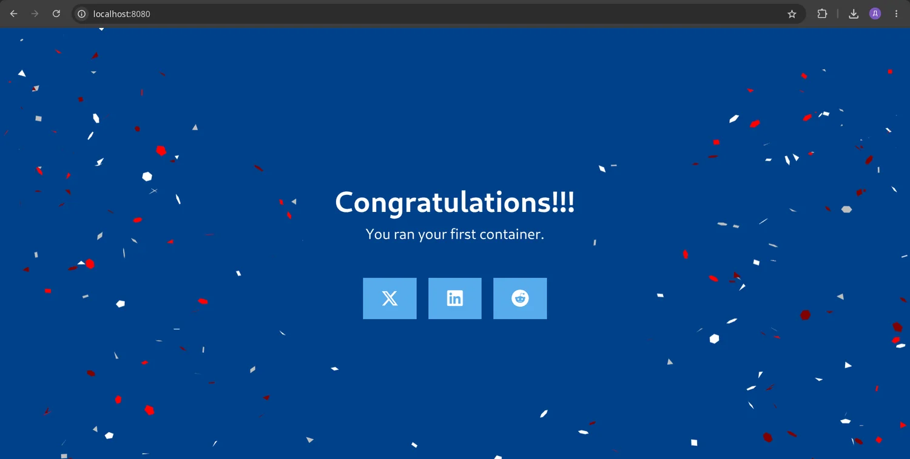
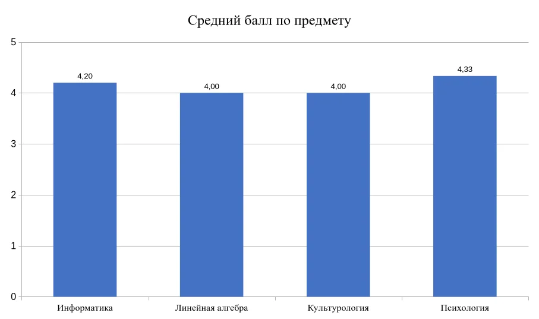

Веб-интерфейсы
HTML, CSS, адаптивная вёрстка и навигация.
Портфолио учебных работ · 2026
Студент прикладной информатики. Собираю небольшие цифровые проекты, в которых важны понятная структура, аккуратный интерфейс и проверяемый результат.

Обо мне
Мне интересны веб-разработка, работа с данными и сервисы, которые общаются через API. В учебных проектах я не ограничиваюсь результатом в виде кода: проверяю сценарии, адаптирую интерфейс для разных экранов и фиксирую итог в отчёте.
Здесь собраны несколько работ: запуск контейнера Docker, тестирование API в Postman и обработка данных в электронной таблице. Скриншоты сделаны в процессе выполнения этих работ и не являются стоковыми изображениями.
HTML, CSS, адаптивная вёрстка и навигация.
GET-запросы, JSON-ответы и позитивные сценарии.
Docker и запуск локальных сервисов.
Таблицы, формулы и наглядные диаграммы.
Выбранные работы

01 / API
Семь запросов: позитивные сценарии, обработка ошибки и ответы в формате JSON.
GET · JSON · 200/404
02 / Docker
Запуск контейнера и проверка публикации локального порта.
Docker · localhost
03 / Данные
Расчёты по формулам и визуализация данных в электронной таблице.
Calc · диаграммыКонтакты
Форма ниже проверяет корректность электронной почты до отправки. Контактные ссылки добавлены как обязательные интерактивные элементы учебного макета.

Открыть сайт по QR-коду
kalizeip.github.io/ocg-project-7